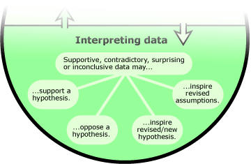
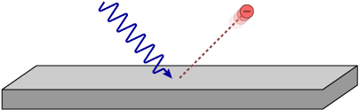
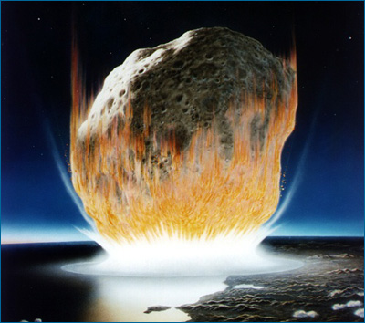
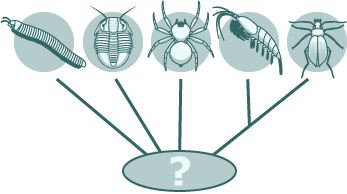

Scientists typically weigh multiple competing ideas about how something works and try to figure out which of those is most accurate based on the evidence. However, looking at the results of a test (whether the test is an experiment or another sort of study) often leads to surprises.
- Evidence may lend support to one hypothesis over others. For example, drilling into coral atolls and discovering a layer of coral thousands of feet thick clearly lent support to the idea that coral atolls form around subsiding volcanic islands, although, of course, many other lines of evidence also helped support that idea over competing explanations.
- Evidence may help rule out some hypotheses. Similarly, the results of the atoll drilling project helped refute a different idea - that atolls grow atop underwater mountains built up by oceanic debris, which would have fit with the observation of a thin layer of coral.
- Evidence may lead to the revision of a hypothesis. For example, experiments and observations had long supported the idea that light consists of waves, but in 1905, Einstein showed that a well known (and previously unexplained) phenomenon - the photoelectric effect - made perfect sense if light consisted of discrete particles. This led physicists to modify their ideas about the nature of light: light was both wave-like and particle-like. 
- Evidence may reveal a faulty assumption, causing the scientist to revise his or her assumptions and possibly redesign the test. For example, in the 1970s, geologists tried to test ideas about the timing of the transition between the Cretaceous and Tertiary periods by measuring the amount of iridium in the transitional rock layer. The test relied on the assumption that iridium was deposited at a low but constant, normal rate. However, to their surprise, the rock layer contained unusually large amounts of iridium, indicating that their original test design had been based on the false assumption of a low and constant deposition rate. All tests involve some assumptions. To learn more, jump to Making Assumptions.
- Evidence may be so surprising that a wholly new hypothesis or new research question is inspired. Along similar lines, the unexpected discovery of large amounts of iridium at the Cretaceous-Tertiary boundary eventually inspired a new hypothesis about a different topic - that the end-Cretaceous mass extinction was triggered by a catastrophic asteroid impact. 
- Evidence may be inconclusive, failing to support any particular explanation over another. For example, many biologists have investigated the anatomy and genetic sequences of the arthropods (crustaceans, insects, millipedes, spiders, and their relatives) in order to figure out how these groups are related. So far, the results have been inconclusive, not consistently supporting a single view of their interrelationships. Biologists continue to collect more evidence in order to resolve the question. 
The photoelectric effect is a phenomenon in which electrons are emitted by a metal surface when certain frequencies of light strike it. This effect didn't make sense until Einstein suggested that light consisted of particles with discrete amounts of energy.
New evidence can feed back into the process of science in many ways. Most importantly, new evidence helps us evaluate ideas. To learn more about how science evaluates ideas, read on ...